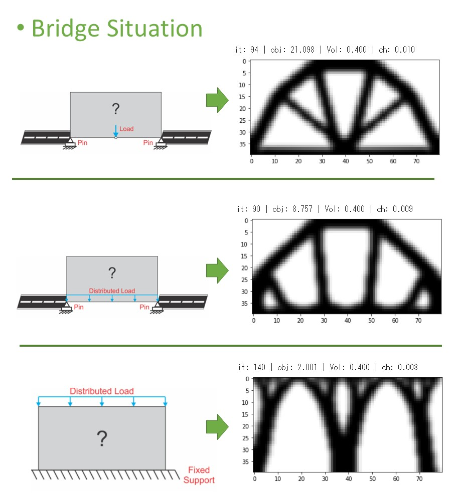

2021.08 Pythonで作成．
DTU.dkで公開されているtopopt.pyを参考にして様々な条件下の2D橋モデルを作成しました．
GitHub
https://github.com/aTajima98/Topology-Opt-Bridge
処理手順
1. 問題のモデル化．設計の初期化． 2. 目的関数の計算 3. 目的関数の感度分析 4. 設計変数の更新 5. 2~4の操作を収束するまで繰り返す．
トポロジー最適化について

コーディングについて
Pythonで約500行でコーディングを行いました．プログラムは，GitHubに置いてあります．